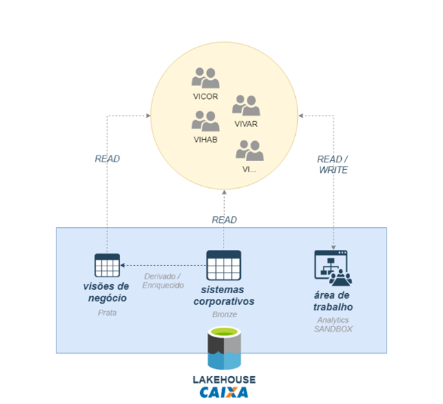
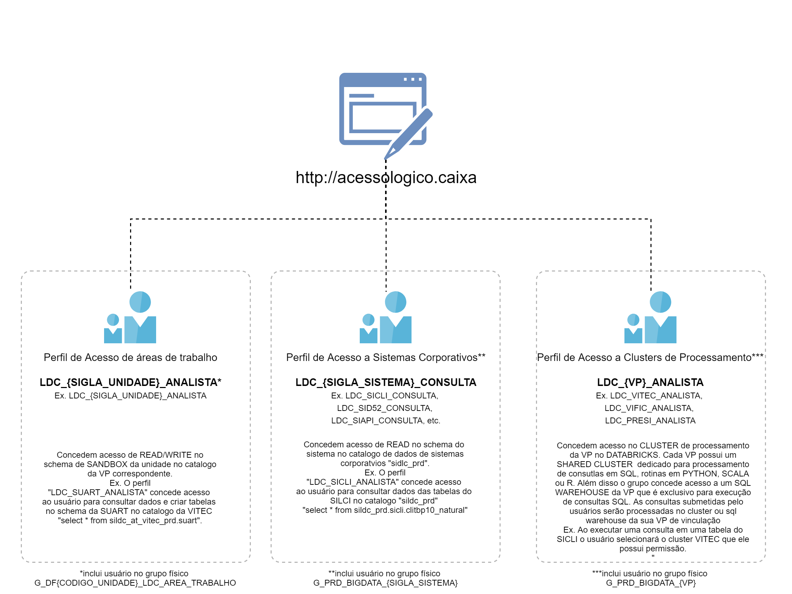

Visão Arquitetural das Soluções de Big Data e Analytics da CAIXA
A CAIXA implantou um ambiente de Big Data e Analytics, em 2018, com o objetivo de disponibilizar os recursos tecnológicos e os conjuntos de dados necessários para que os gestores de negócio da CAIXA possam, de forma autônoma, executar estudos analíticos. Como consequência, alavancam os negócios, tomam decisões mais embasadas e definem estratégias orientadas por dados.
Dentre os recursos tecnológicos, há um conjunto de ferramentas destinadas a prover a autonomia e a independência, de forma que as áreas de negócio possam manipular e analisar conjuntos de dados, sem dependência de áreas da tecnologia.

Figura.1 – Self Service / Data Analysis & Modeling
O ambiente de Big Data provê um Lakehouse para os usuários de negócio que contempla 3 grandes áreas:
1) Sistemas Corporativos – dados de sistemas corporativos extraídos periodicamente pela área de tecnologia e disponibilizados para consulta aos usuários de negócio;
2) Áreas de Trabalho – espaço para que usuários de negócio possam carregar seus próprios dados, armazenar resultados e realizar cruzamentos entre dados de diversos sistemas corporativos e dados do próprio departamento de forma simples e integrada;
3) Visões de Negócio / Produtos de Dados – visões corporativas de dados com foco no uso pelos usuários de negócio.
Os ambientes on-premises e nuvem permitem a realização de estudos de comportamento e desempenho de produtos e processos envolvendo os dados dos sistemas da CAIXA, com auditoria de acesso e metadados que descrevem o seu significado.
No ambiente de Big Data, processos de engenharia de dados reduzem o trabalho das áreas de negócio com a negociação e obtenção de dados junto aos gestores de cada sistema da CAIXA.
O datalake não será utilizado em processos transacionais.
SOLUÇÃO DE BIG DATA E ANALYTICS INTERNA (ON-PREMISES)
A solução interna de Big Data e Analytics provê um ambiente para armazenar dados corporativos e de áreas de trabalho (Stage Areas).
Diagrama da solução de Big Data e Analytics interna (DESUSO):

Figura.2 – Diagrama da solução de Big Data e Analytics interna
Ambiente em DESUSO, com iniciativas em curso para migração dos usuários/cargas de trabalho para ambiente de nuvem e futura desativação da infra-estrutura alocada. O ambiente adota tecnologias de software consideradas obsoletas e solução de storage que não possuem suporte pelos fornecedores ou fabricantes. As capacidades analíticas para os usuários de negócio do ambiente on-premises atual já estão disponíveis no ambiente em nuvem atual e as capacidades de engenharia serão substituídas por nova solução on-premises (descrita no próximo tópico).
Elementos da solução de Big Data e Analytics interna (DESUSO):
|
#
|
Elemento
|
Descrição
|
Ferramentas
|
|
1 |
Sistemas
Corporativos (Fontes de Dados)
|
Fontes dos dados corporativos que são replicados no Lakehouse CAIXA.
|
Bases de dados Oracle, DB2, SQL Server, arquivos de interface, fila MQ, etc.
|
|
2 |
Extrator
de
Dados
|
Processos responsáveis pela extração de dados das fontes
corporativas. Os dados dos sistemas são gerados em formato de interface padrão do Big Data
(.dat/.ctm, UTF8 NO BOM, LF).
Ref. Guia Geração de Arquivos. |
Power Center, Cobol, Java etc. |
|
3 |
Stage
Area
|
Solução de armazenamento temporária. Os arquivos de
dados de sistemas são armazenados em estrutura padrão
<sigla_sistema>/<nome_tabela>/<tipo_carga>/<arquivo>.yyyyMMddhh24mmss.dat
|
ISILON / HDFS |
|
4 |
Cluster
de
Ingestão de dados
|
Cluster onde é feita a preparação de dados. |
Apache Flume e Apache Pig |
|
5 |
Dados
Corporativos
(Lakehouse)
|
Área de armazenamento padronizada dos dados corporativos
em seu formato primário (dado bruto). |
ISILON / HDFS |
|
6 |
Grupos
de
Acesso a
Dados de Sistemas Corporativos
|
Grupos de acesso específicos para cada um dos sistemas integrados no
Big Data. A concessão de acesso se dá pelo
acessologico.caixa (SIGAL) |
Active Directory |
|
7 |
Cluster
de
Processamento de Dados Analíticos
|
Conjuntos de recursos (hardware e software) para o APACHE HAWQ. Cluster
destinado aos usuários de negócio para a execução de processos Self-services Analytics. |
Apache Hawq |
|
8 |
Notebooks e
Visões
|
Ferramentas de exploração/apresentação destinadas aos usuários finais. |
DBeaver, Zeppelin, Power BI |
|
9 |
Áreas de
Trabalho
(Workspace Area)
|
Áreas de armazenamento com permissão de escrita, disponibilizada
aos usuários para realizar estudos contemplando dados corporativos e departamentais. |
ISILON / HDFS / SMB |
|
10 |
Grupos
de
Acesso a
Áreas de Trabalho
|
Grupos de acesso específicos para as unidades de negócio.
Os grupos concedem acesso a schema com permissão de escrita e gravação de dados departamentais,
e realizar análises cruzadas com dados corporativos. Os grupos possuem um Matriz de Perfil
de Acesso que define quais unidades podem solicitar acesso aos dados e a concessão de acesso
se dá pelo acessologico.caixa (SIGAL) |
Active Directory / Entra ID |
|
11 |
LOG
Area
|
Solução de armazenamento de logs dos processos de ingestão e
do uso e tratamento de dados no Lakehouse para fins de monitoramento e auditoria.
|
ISILON / HDFS |
|
12 |
Unidades
Usuárias
|
Unidades CAIXA usuárias do Lakehouse CAIXA. Interagem com o ambiente a
partir:
1) Ferramentas de Relatórios e Notebooks de exploração de dados via HTTP;
2) IDE de dados via conexão JBDC;
3) Armazenam arquivos na área de trabalho via compartilhamento SMB na rede Windows. |
Dbeaver e demais ferramentas do item 8. Notebook e Visões |
Diagrama da solução de Big Data e Analytics interna atual:

Figura.3 – Diagrama da solução de Big Data e Analytics interna atual
O ambiente on-premises contém capacidades de pré-processamento para reduzir o volume de dados enviados ao ambiente em nuvem. A solução atual não contempla ambiente on-premises, o ambiente em nuvem fornecerá essas capacidades.
Elementos da solução de Big Data e Analytics interna atual:
|
#
|
Elemento
|
Descrição
|
Ferramentas
|
|
1 |
Sistemas
Corporativos (Fontes de Dados)
|
Fontes dos dados corporativos que são replicados no Lakehouse CAIXA. |
Bases de dados Oracle, DB2, SQL Server, arquivos de interface, fila MQ etc. |
|
2 |
Extrator
de Dados
|
Processos de extração de dados. Os dados são gerados
em formato de interface padrão do Big Data (.dat/.ctm, UTF8 NO BOM, LF).
Ref. Guia Geração de Arquivos. |
Power Center e utilitários de banco de dados |
|
3 |
Stage
Area
|
Solução de armazenamento temporária.
Os arquivos são armazenados em estrutura padrão
<sigla_sistema>/<nome_tabela>/<tipo_carga>/<arquivo>.yyyyMMddhh24mmss.dat
|
CEPH (Software defined Storage)* |
|
4 |
Cluster de
Ingestão de Dados
|
Cluster Apache Spark onde é feita a preparação de dados a serem enviados
para a NUVEM. |
Apache Spark* |
|
5 |
Dados
Corporativos (Lakehouse)
|
Área de armazenamento de dados em seu formato primário
(dado bruto). Os dados dos sistemas serão armazenados no formato open
Delta Lake (delta.io). |
CEPH (Software Defined Storage)* |
|
6 |
Grupos
de Acesso a
Dados de Sistemas Corporativos
|
Grupos de acesso específicos para cada um dos sistemas
integrados no Big Data. A concessão de acesso se dá pelo
acessologico.caixa (SIGAL) |
Active Directory / Entra ID |
|
7 |
Log
Area
|
Solução de armazenamento de logs dos processos de
ingestão e do uso e tratamento de dados no Lakehouse para fins de monitoramento
e auditoria. |
CEPH (Software Defined Storage)* |
|
8 |
Key
Vault
|
- |
-
|
* Soluções disponíveis no pacote IBM Cloud Pak For Data / Watson X Data.
SOLUÇÃO ATUAL DE BIG DATA E ANALYTICS
Diagrama da solução atual Big Data e Analytics
Solução atual completa com Self-Service Analytics (Microsoft Azure) e Modelagem (Google Cloud)

Figura.4.1 – Diagrama da solução atual de Big Data e Analytics
Solução Self-Service Analytics
A solução atual de Big Data e Analytics, desde 2024, disponibiliza um ambiente e ferramentas para realização de estudos analíticos.
A solução tem como objetivo apoiar necessidades de negócio relacionada com análise de tendências, identificação de comportamento, mineração de dados, avaliação de resultados, prospecção de negócios, simulação de cenários e projeções de cenários futuros.
O ambiente está implantado atualmente na nuvem da Microsoft Azure, com baixo acoplamento, para minimizar o esforço para a migração para outras nuvens.
Diagrama da solução atual de Self-Service Analytics:

Figura.4.2 – Diagrama da solução atual de Self-Service Analytics
Elementos da solução atual de Self-Service Analytics:
|
#
|
Elemento
|
Descrição
|
Ferramentas
|
|
1 |
Fontes
Azure (Sistemas Corporativos)
|
Fontes de dados implantadas no ambiente de nuvem Azure, ou
extração de dados do ambiente
on-premises. Os dados são gerados em formato de interface
padrão do
Big Data (.dat/.ctm, UTF8 NO BOM, LF) ou são capturados por processo padrão de
ingestão de
streaming (item 3.). A estrutura e metadados das interfaces são definidos em arquivo
específico
(.ddl .json).
Ref. Guia Geração de Arquivos |
Azure Eventhub, Azure CosmosDB, Azure SQL Server |
|
2 |
Armazenamento
Temporário (Stage Area)
|
Armazenamento de objetos em nuvem temporário. Os arquivos de dados
são armazenados em estrutura padrão
<sigla_sistema>/<nome_tabela>/<tipo_carga>/<arquivo>.yyyyMMddhh24mmss.dat
|
Azure Blob |
|
3 |
Cluster de
Ingestão de Dados
|
Cluster Apache Spark no Azure Databricks onde é
executada a ingestão de dados no Lakehouse. Contempla os processos padrão de
ingestão de dados batch e de ingestão de dados de streaming (near realtime) e demais processos
de otimização de organização de dados do ambiente. |
Azure Databricks |
|
4 |
Armazenamento Corporativo (Lakehouse)
|
Camada de armazenamento otimizada. Dados organizados em um container
por sistema. Os dados são armazenados no formato open Delta Lake (delta.io). |
Azure Blob Store, Delta Lake |
|
5 |
Grupos
de Acesso
|
Grupos de acesso específicos para cada um dos sistemas integrados
no Big Data. A concessão de acesso se dá pelo acessologico.caixa
(SIGAL) |
Active Directory / Entra ID |
|
6 |
Self-service Data
Analysis & Modeling
|
Ambiente configurado com clusters de processamento dedicados
para cada Vice-presidência da CAIXA e grupos de acesso específicos no AD para cada VP.
Unidades
podem solicitar acesso aos dados e a concessão de acesso se dá pelo
acessologico.caixa (SIGAL) |
Azure Databricks, SQL, Python, Scala, R |
|
7 |
Notebooks e
Visões
|
Ferramentas de exploração/apresentação destinadas aos
usuários finais. |
Azure Databrikcs, Power BI |
|
8 |
Armazenamento Área
de Trabalho
|
Serviço de armazenamento de objetos em nuvem (storage).
Área com permissão de escrita disponibilizada aos usuários para viabilizar estudos com
dados corporativos e departamentais. |
Azure Blob Store |
|
9 |
Grupos
de Acesso a Áreas de Trabalho
|
Grupos de acesso específicos para as unidades de negócio.
A concessão de acesso se dá pelo acessologico.caixa
(SIGAL) |
Active Directory |
|
10 |
Repositório de Metadados
|
Solução unificada de governança e controle de acesso aos
dados do Lakehouse e áreas de trabalho. |
Unity Catalog |
|
11 |
Armazenamento
Log
|
Serviço de armazenamento de objetos em nuvem. Consolida
os logs tanto de acesso aos dados. |
Azure Blob Store |
*Ferramentas homolagadas pela CAIXA
Solução Modelagem
A solução atual de Big Data e Analytics para modelagem disponibiliza na GCP (Google Cloud Platform) os Produtos de Dados gerados na Azure. Não está contemplado o provimento de dados brutos a partir do Big Data neste ambiente.
VISÃO GERAL DAS SOLUÇÕES DE BIG DATA E ANALYTICS (AMBIENTE HÍBRIDO)
Demonstração do ambiente Self-Service Analytics e o On-Premises.

Figura.5 – Visão Geral das Soluções de Big Data e Analytics (ambiente Híbrido)
GERENCIAMENTO DE ACESSOS E PERMISSÕES NO BIG DATA
O acesso ao ambiente de Big Data e Analytics é gerenciado por meio de perfis no sistema SIAAS/SIGAL, que concede acesso aos grupos físicos no Entra ID (antigo Microsoft Active Directory).

Figura.6.1 Visão Grupos de Acesso
Grupo de acesso a dados de sistemas corporativos
Cada gestor de sistema integrado ao ambiente de Big Data é responsável por configurar, no SIAAS, o perfil que define quais unidades da CAIXA podem acessar os dados desse sistema.
Exemplo: LDC_SICLI_CONSULTA.
Caso a unidade do solicitante esteja autorizada, é possível solicitar o acesso via SIGAL acessologico.caixa. Uma vez aprovado, o usuário é incluído no grupo físico correspondente no Entra ID.
Exemplo de grupo físico: G_PRD_BIGDATA_SICLI.
Grupo de acesso a dados das áreas de trabalho
Além dos dados de sistemas, também é possível solicitar acesso aos dados armazenados nas áreas de trabalho de cada unidade. Esses dados são oferecidos pelos próprios usuários.
Os acessos de leitura e escrita são concedidos por meio de perfis no SIGAL. Estes perfis são acessos lógicos como o LDC_CESOB_PERFIL_001ou LDC_SUART_ANALISTA. Os usuários são incluídos nos grupos físicos no Entra ID conforme a estrutura padronizada.
Exemplo de grupo físico: G_DF7390_LDC_AREA_TRABALHO (onde "7390" indica o código da unidade, no caso a CESOB neste exemplo).
Grupo de acesso a clusters de processamento
O ambiente de Big Data disponibiliza clusters de máquinas para processamento (all purpose compute) de grandes volumes de dados. Esses clusters são organizados por setor de vinculação: Vice-Presidência (VP), Presidência (PRESI) ou Conselho de Administração (COADM).
Além desse cluster, há a disponibilização de um Serverless SQL Warehouse do setor de vinculação, focado na execução de consultas SQL — preferencialmente com baixo volume de dados — sem a necessidade de inicializar um cluster.
Usuários devem solicitar acesso ao perfil correspondente à sua unidade (ex.: LDC_VITEC_ANALISTA, LDC_PRESI_ANALISTA) para executar rotinas analíticas.
Os perfis por setor incluem os usuários nos respectivos grupos físicos no Entra ID.
Exemplos de grupo físico:
- G_<AMBIENTE>_BIGDATA_AT_<VP>
- G_DES_BIGDATA_AT_VITEC
- G_PRD_BIGDATA_AT_PRESI
<AMBIENTE>pode serDES(não-produtivo) ouPRD(produtivo), e define o contexto do acesso. E<VP>está relacionado ao setor.
Todos os grupos de acesso aos dados de Big Data estão sincronizados com os ambientes em nuvem, permitindo que os usuários os acessem a partir de qualquer plataforma.
Grupo de acessos

Figura.6.2 Visão Geral Perfis de Acesso
GOVERNANÇA E AUDITORIA DE ACESSO A DADOS
O acesso aos dados dos sistemas corporativos é registrado em logs de auditoria, que subsidiam as atividades de segurança e conformidade, além de apoiar a governança sobre o uso dos dados e ações de mentoria.
Abaixo, seguem exemplos de visões geradas a partir do uso de dados no ambiente de Big Data. Selecione este link para acessar Visão Mensal de Uso - Lakehouse CAIXA
Painel.1 Visão Mensal de Uso - Analítico e Sintético
GESTÃO DE CUSTOS DO AMBIENTE DE BIG DATA (FINOPS)
Segregação de Custos por Unidade
A definição de grupos de acesso específicos por unidade, bem como a criação de clusters de processamento e a alocação de armazenamento (storage) para áreas de trabalho dedicadas a cada Vice-Presidência (VP), possibilitou a correta contabilização dos custos segregados por VP da CAIXA.
Importante: os custos de processamento para ingestão de dados oriundos dos sistemas corporativos, bem como os custos de armazenamento desses dados, não são contabilizados para uma VP específica e, portanto, não compõem essa visão de custos segregados.

Figura.7.1 Visão Mensal de Custos por VP, PRESI e COADM

Figura.7.2 Custos Consolidados
GLOSSÁRIO
- Data Warehouse: Repositório centralizado de dados estruturados, otimizados para consultas e análises.
- Lakehouse: Arquitetura que combina a flexibilidade do Data Lake com a estruturação e desempenho do Data Warehouse, permitindo armazenar grandes volumes de dados e também organizá-los para análise.
- Cluster: Conjunto de máquinas (nós) que operam de forma coordenada para executar tarefas de processamento de dados em larga escala.
- On-premises: Modelo em que a infraestrutura de TI (servidores, armazenamento, etc..) é mantida fisicamente na empresa.
- Self-service Analytics: Capacidade que permite aos usuários de negócio explorarem e analisarem dados diretamente, sem depender exclusivamente de equipe de TI.
- Schema: Estrutura que define a organização dos dados de uma tabela ou banco, especificando nomes de colunas, tipos de dados e regras de integridade.
- IDE: Ambiente que reúne ferramentas para desenvolvimento de software, como editor de código e terminal.
- Compartilhamento SMB: Protocolo de rede utilizado para compartilhamento de arquivos entre dispositivos em uma rede local.
- Nuvem (Cloud Computing): Modelo de computação que permite acessar recursos de TI (armazenamento, processamento e banco de dados) pela internet, sem depender de infraestrutura local.
LINKS RELACIONADOS
- Datalake CAIXA
- Guia de Acesso Lakehouse Databricks
- Catálogo de dados
- OR200004 - Data Lake CAIXA
- O365GRP-Big Data & Analytics CAIXA
|
Data
|
Versão
|
Descrição
|
Autor
|
|
28/06/2023 |
1.0
|
Criação do documento |
SUART15 |
|
16/04/2025 |
1.1
|
Atualização dos diagramas e novos tópicos |
SUART11 |